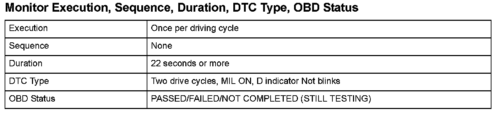
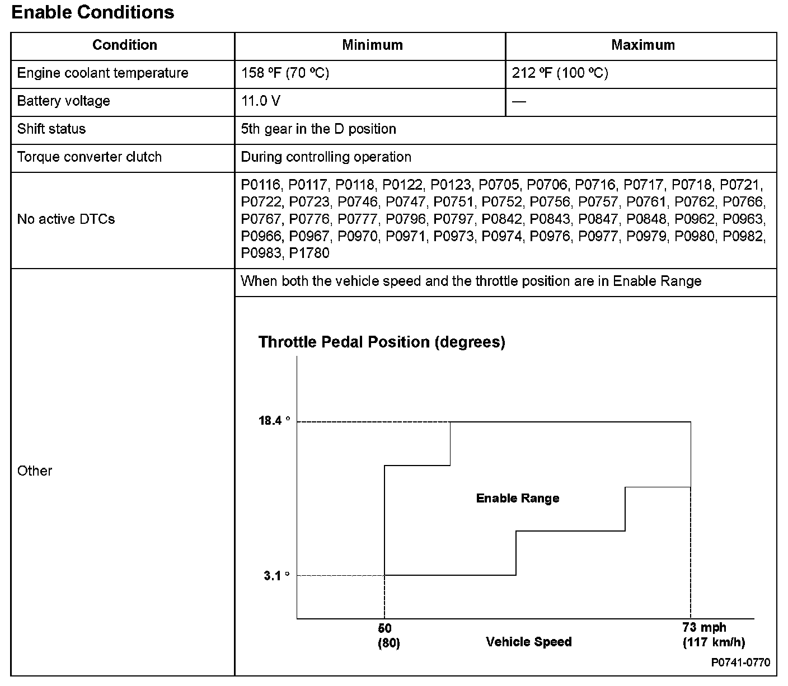

Advanced Diagnostics
DTC P0741: Torque Converter Clutch Hydraulic Circuit Stuck OFFGeneral Description
The power transfer capacity of the torque converter clutch is controlled by the balance of automatic transmission fluid (ATF) supply to and discharge from the torque converter. When hydraulic pressure is applied internally, the torque converter clutch turns ON, and when hydraulic pressure is applied from the back pressure side, the torque converter clutch turns OFF. As the hydraulic pressure from the internal pressure side increases, the power transfer capacity of the torque converter clutch increases. The direction of hydraulic pressure supply is switched by the torque converter clutch and the lock-up shift valve. ATF is supplied from the internal pressure side to shift solenoid valve D when the signal from the powertrain control module (PCM) is ON (12 V), and ATF is supplied from the back pressure side when it is OFF (0 V). The balance of internal pressure and back pressure is controlled by A/T clutch pressure control solenoid valve B, the lock-up control valve, and the lock-up timing valve. A/T clutch pressure control solenoid valve C maximizes the power transfer capacity of the torque converter clutch when the signal from the PCM is ON (1 A), and it minimizes the power transfer capacity of the torque converter clutch when the signal from the PCM is OFF (0 A). If the ratio of engine speed and input shaft (mainshaft) speed is not about 1:1 while the PCM is issuing the command to turn shift solenoid valve D and A/T clutch pressure control solenoid valve C ON, the PCM detects a faulty lock-up control system and stores a DTC.

Monitor Execution, Sequence, Duration, DTC Type, OBD Status

Enable Conditions
Malfunction Threshold
The ratio of the engine revolutions to the transmission input pulses does not reach about 100 % for at least 22 seconds.
Driving Pattern
1. Start the engine. Hold the engine speed at 3,000 rpm without load (in Park or neutral) until the radiator fan comes on.
2. Drive the vehicle at a constant speed of 60 mph (96 km/h) for at least 22 seconds.
- Drive the vehicle in this manner only if the traffic regulations and ambient conditions allow.
Diagnosis Details
Conditions for illuminating the MIL
When a malfunction is detected during the first drive cycle, a Temporary DTC is stored in the PCM memory. If the malfunction recurs during the next (second) drive cycle, the MIL comes on and the DTC and the freeze frame data are stored.
Conditions for clearing the MIL
The MIL will be cleared if the malfunction does not recur during three consecutive trips in which the diagnostic runs.
The MIL, the DTC, the Temporary DTC, and the freeze frame data can be cleared by using the scan tool Clear command or by disconnecting the battery.